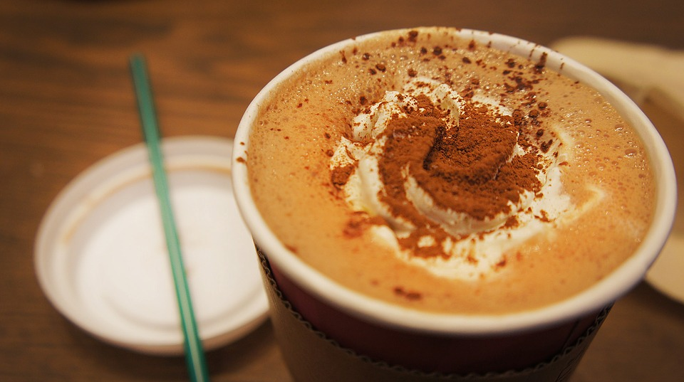
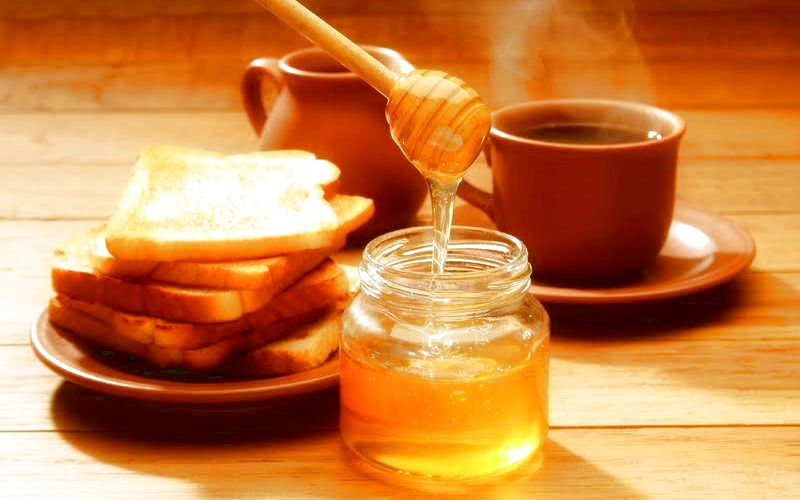
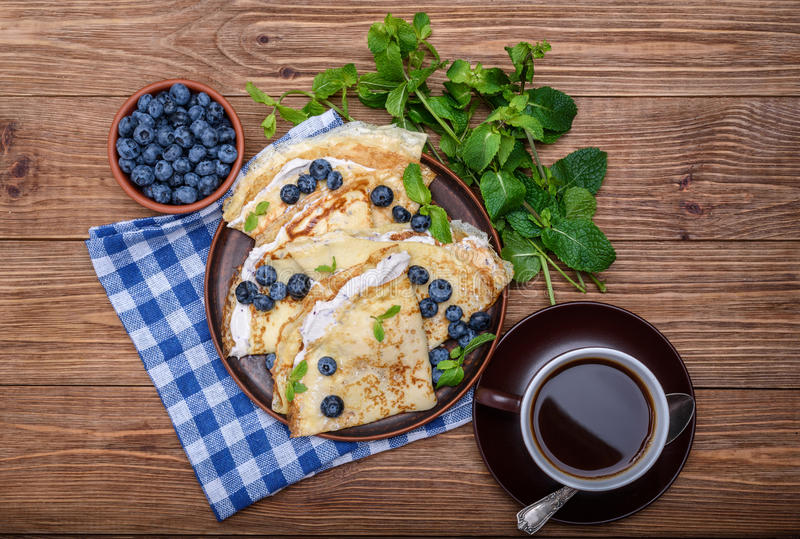
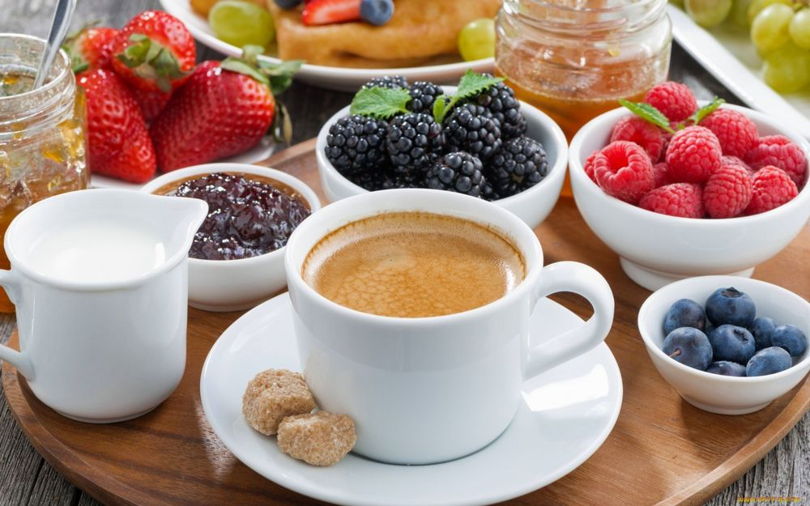

Кофе с какао, шоколадом

Рецепт приготовления очень вкусного кофейного напитка с молоком и пряными специями. Приготовить его несложно, а удовольствие вы получите в достаточном количестве.
Ингредиенты:
Кофе с медом, кардамоном и шоколадом

Как можно поднять себе настроение? Можно спеть веселую песенку, можно съесть шоколадку, а можно сварить себе настоящий и очень вкусный кофе и потереть эту самую шоколадку в напиток.
Ингредиенты:
Кофе с голубикой и какао

Кофе с порошком какао и несколькими ягодами голубики не оставит равнодушным никого.
Ингредиенты:
Кофе с ежевикой и какао

Если вас сложно удивить каким-нибудь оригинальным напитком, то вам просто жизненно необходимо попробовать ежевичный кофе с какао!